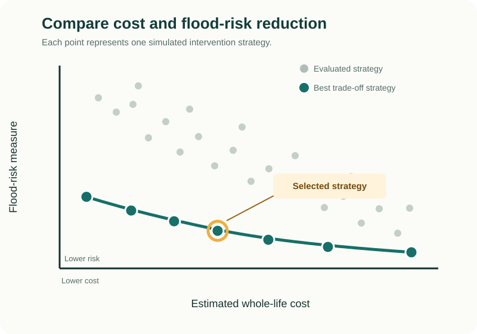
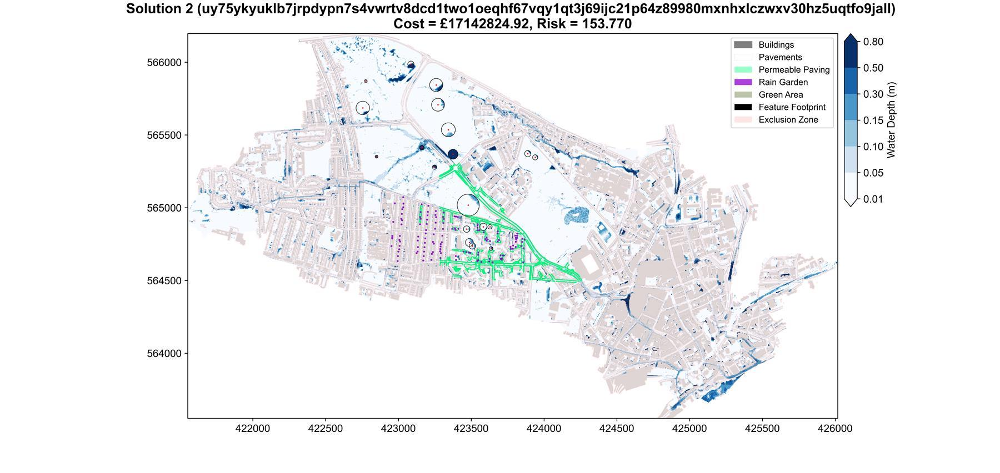

Flood-risk authorities
Example: Lead Local Flood Authorities and Environment Agency teams assessing strategic options.
Comprehensive user guide
Learn how to identify and compare cost-effective urban flood-intervention strategies using a DAFNI-hosted workflow.
Developed with support from
Section 1 · Introduction
The hydrodynamic optimisation tool helps users explore where and how urban flood interventions could be deployed. It compares many possible strategies so that users can identify options offering useful balances between whole-life cost and flood-risk reduction.
The tool automatically generates candidate strategies, tests each one using a hydrodynamic flood simulation and uses the results to focus its search on increasingly promising options.
The workflow runs on the Data & Analytics Facility for National Infrastructure (DAFNI) and uses CityCAT as its flood-simulation engine. Users do not need to understand the underlying optimisation algorithm to follow the practical parts of this guide.
The process continues until the configured simulation budget or stopping condition is reached.
Audience
This guide is for people who want to explore how flood interventions can be optimally designed and located within urban environments. It supports both technical users and decision-makers who will interpret the results.
Example: Lead Local Flood Authorities and Environment Agency teams assessing strategic options.
Example: water companies and consultants developing urban drainage and resilience strategies.
Example: decision-makers producing business cases, setting investment priorities and communicating cost-risk trade-offs.
Example: researchers and students investigating hydrodynamic optimisation or blue-green infrastructure planning.
Purpose
The tool supports early-stage optioneering. It helps users investigate which intervention types and locations best reduce flood risk and understand the trade-offs between cost and flood performance.
Design space
Users define the types and candidate locations of the interventions that the tool is allowed to explore.
Surfaces that allow rainfall to infiltrate and reduce surface runoff.
Vegetated features that collect, store and manage runoff.
Conversion of impermeable surfaces to permeable green areas, which may also deliver social, environmental or other co-benefits.
Storage areas whose location and capacity can be explored by the tool.
User-defined footprints that can represent shaped storage, barriers, channels and other interventions.
Storage located away from the intercepted flow path and connected to a separate inlet.
CityCAT can represent green roofs, but they cannot currently be selected or optimised by this workflow.
The tool searches only among the interventions and locations supplied by the user. Well-informed candidate sites and realistic parameter ranges help it make effective use of the available simulations.
Optimisation objectives
Every run balances estimated whole-life cost against one selected measure of flood risk.
Minimises peak flow at one or more user-defined outlet lines. When several outlets are used, their peak flows are combined.
Minimises the number of buildings classified as being at high flood risk. All buildings must be included in the model input.
This measure remains under development because building types cannot yet be assigned automatically and reliably.
Do not configure a study around economic damages at this stage. The guide will be updated when the required building-classification workflow is available.
Prerequisites
Users need access to DAFNI and a CityCAT-ready study. At minimum, the hydrodynamic model requires rainfall, a digital elevation model (DEM) and topography data.
Rainfall, DEM and topography are required. Later sections explain the expected files, coordinate system and folder structure; spatial inputs should use British National Grid (EPSG:27700).
Results
Each run produces a set of best-performing trade-off strategies rather than a single prescribed answer. Users can compare the strategies in a cost-versus-flood-risk plot and then inspect the interventions and simulated flooding associated with individual options.
Shows the strongest cost and flood-risk trade-offs found during the run.
Shows where interventions are located and the simulated maximum flood depths for each strategy.
The Solutions.txt file records the selected features, their characteristics and objective values.
Parameters, simulation counts, execution logs and archived setup files support review and reproducibility.


This simplified example introduces the relationship between the comparison plot and an individual solution map. Section 6 explains the complete result set.
Use with care
Runtime
Every candidate strategy requires a hydrodynamic simulation. Use a small test run to confirm the setup before committing resources to a production study. For urban areas, high-resolution data are important so that flow paths are adequately resolved.
| Domain size (km2) | Computational cells | Rainfall return period (years) | Simulation duration (hours) | Wall-clock time (hh:mm:ss) |
|---|---|---|---|---|
| TBC | TBC | TBC | TBC | TBC |
Values are placeholders. Timings will be indicative only because every catchment is unique. The table reports the cost of one simulation, not a complete optimisation. Total runtime also depends on the number of simulations performed per generation, which users control through max_front_size.
DAFNI supplies the managed computational environment, while users remain responsible for selecting an appropriate run size and checking study results. For computationally demanding optimisations that cannot be completed within a reasonable timeframe on DAFNI, contact the guide authors to discuss possible access to cloud-computing resources. Access cannot be guaranteed and depends on resource availability, project scope and applicable access arrangements.
How to use the guide
The guide follows a practical study sequence: prepare the flood model and intervention data, configure and validate the DAFNI workflow, run the optimisation, and interpret and export the results.
Sections 2 to 10 provide the practical guidance needed to operate and assess the tool. Section 11 provides an in-depth technical reference for advanced and curious users.
Unavailable or incomplete features are labelled clearly, and the authors will endeavour to keep this guide aligned with the deployed tool. This edition is valid for DAFNI model version v6 and was last updated on 20 August 2026.
Section 2 · How the tool works
This section explains the optimisation process conceptually. Users do not need to understand the underlying code or evolutionary-computing theory to operate the tool, but understanding the workflow will make its settings and results easier to interpret.
The core process
The tool searches for effective blue-green infrastructure strategies by repeatedly linking the evolutionary algorithm with CityCAT.
↻ The cycle repeats until a stopping condition is met.
Every unique candidate requires a hydrodynamic simulation. CityCAT evaluation therefore accounts for most of the computational cost of an optimisation.
Encoding the design space
A complete intervention strategy is represented by a chromosome: a single sequence of binary values assembled from all candidate interventions in the study.
A zonal intervention has two states: 0 excludes it and 1 includes it. This suits predefined permeable-paving, rain-garden and green-area zones.
1 0 1 0In this example, zones 1 and 3 are included while zones 2 and 4 are excluded.
Local features can use several groups of bits to encode inclusion, storage depth, area or radius, position within an allowable area, and other feature-specific characteristics.
Each zone should represent a distinct physical decision. Overlapping or redundant zones enlarge the search space without creating genuinely different strategies and can make the search less efficient. Encoded dimensions and locations are for optioneering and still require detailed engineering design.
Genetic representation
The deployed tool uses Gray binary coding for characteristics with multiple possible values. In standard binary coding, two neighbouring values can have substantially different bit patterns, so several bits may need to change simultaneously. This is known as a Hamming cliff and can hinder evolutionary search.
Gray coding orders the representation so that neighbouring encoded values differ by only one bit. A small genetic change is therefore more likely to produce a small change in the corresponding intervention characteristic.
Gray coding is fixed within the deployed workflow and does not need to be selected or configured by the user.
Hydrodynamic evaluation
Every unique chromosome is converted into a CityCAT model configuration. Depending on the selected interventions, this may change surface permeability and infiltration properties, rain-garden locations, the elevation model used for detention features, fixed flood-management features, or offline storage and inlet arrangements.
CityCAT simulates the supplied rainfall event using this modified configuration. The tool then extracts the information needed by the chosen flood-performance objective.
If the algorithm encounters an identical chromosome again, its existing simulation results can be reused. The reported unique-simulation count therefore records new hydrodynamic evaluations rather than every encounter with a strategy.
Fitness evaluation
The deployed workflow performs a bi-objective optimisation: it simultaneously minimises intervention cost and one supported measure of flood performance.
The present value of implementing and maintaining the selected strategy. Depending on the intervention type and configured assumptions, this can include construction, excavation, routine and major maintenance, professional fees, decommissioning, design lifespan and discounting.
Either the peak simulated discharge derived from the defined outlet hydrograph or hydrographs, or the number of buildings classified as being at high flood risk using simulated depths around their footprints.
Both objectives are minimised. Cost values are planning estimates used to compare strategies consistently, not contractor quotations. The economic-damages objective is not currently available because automated building-type assignment has not yet been integrated.
Initial boundaries
At the beginning of a run, the tool evaluates two boundary strategies. The do-minimum strategy excludes the encoded interventions. The do-maximum strategy represents the maximum encoded intervention state.
These simulations provide initial estimates of the cost and flood-performance ranges. The tool uses these bounds to divide the objective space into an epsilon grid. If later solutions extend or dominate the initial boundaries, the grid is recalculated and the archive is checked again.
Adding appropriate interventions should not increase flood risk, and every intervention should have a positive cost. If the do-maximum strategy performs worse than the do-minimum strategy, the tool reports an error because the assumptions used to establish the search space are no longer valid.
Preserving useful solutions
The optimisation does not search for one universally “best” strategy. Cost and flood performance conflict: a strategy that achieves a greater flood reduction will often require greater investment.
A solution dominates another when it is no worse for either objective and strictly better for at least one. A solution is Pareto optimal when no evaluated alternative dominates it. Together, the non-dominated solutions form the Pareto front.
The ε-MOEA divides the objective space into boxes and retains no more than one representative from each relevant box. Where several solutions occupy the same box, the tool first checks strict dominance. If none dominates, it retains the solution closest to the preferred corner of the box. This produces a manageable, diverse approximation of the Pareto front rather than an archive crowded with nearly identical results.
Evolutionary search
The search begins with a small population of candidates and an archive seeded by the boundary solutions. One parent is selected from the archive and another from the current population, balancing exploitation of strong existing strategies with exploration of new possibilities.
Favours existing high-performing strategies when choosing parents.
Combines portions of two parent chromosomes to produce offspring.
Introduces small random changes that help explore the search space.
Reintroduces selected archive members when the population is adaptively resized.
If progress is insufficient, the tool can increase the population size. Twenty-five per cent of the resized population is seeded from the archive, while the remainder restores diversity and explores new strategies.
Completing the search
The run stops when the configured maximum number of unique CityCAT simulations is reached. This provides a firm computational budget.
The deployed tool monitors improvement in the normalised hypervolume covered by the archive over a configurable lag window. It can stop when improvement falls below the convergence threshold and the minimum simulation requirement has been satisfied.
Self-termination indicates that the search has stopped making sufficient progress. It does not prove that the exact global Pareto front has been found.
Division of responsibilities
| User decision | Handled automatically |
|---|---|
| Rainfall event and return period | Generation of candidate chromosomes |
| Candidate interventions and allowable characteristics | Gray decoding of intervention states |
| Flood-performance objective | CityCAT execution for unique strategies |
| Cost and lifecycle assumptions | Calculation of objective values |
| Maximum front size | Epsilon-grid construction and adaptation |
| Minimum and maximum simulations | Archive maintenance |
| Lag window and convergence threshold | Population adaptation and self-termination |
A larger simulation budget gives the algorithm more opportunities to discover improved strategies, but increases runtime. Similarly, requesting a more detailed approximation of the Pareto front may increase the number of useful solutions while requiring additional evaluations.
Key point
The tool is an iterative learning process. It proposes an intervention strategy, evaluates it using a fully dynamic CityCAT simulation, retains useful results and uses those results to guide subsequent simulations. The final output is a diverse set of cost-risk trade-offs for decision-makers to examine, not a single prescribed design.
Section 3 · Preparing your input data
Good input preparation is essential. The optimiser may run CityCAT hundreds or thousands of times, so an error in the rainfall, terrain, topography or candidate-intervention data can be repeated throughout an expensive study. Prepare and check a small, valid CityCAT setup before launching the optimisation.
This section describes the inputs accepted by the deployed workflow. It reflects the current data-processing code and container configuration rather than the older repository README.
Platform data flow
On DAFNI, inputs are managed as datasets. After uploading and publishing a dataset, assign a specific version of it to the corresponding workflow data slot through a parameter set. When an instance starts, DAFNI mounts the selected datasets inside the container under /data/inputs/.
The mounted inputs are read-only. The tool therefore validates and converts them into working files beneath /data/outputs/CityCAT_setup and /data/outputs/alg_inputs. These working directories, together with the optimisation results, are collected as run outputs.
Keep each input type in a clearly named DAFNI dataset. This makes parameter sets easier to audit, update and reuse across studies.
Minimum requirements
Every run requires rainfall, terrain and topography data. The workflow definition may display these data slots as optional, but the current processing pipeline cannot construct a valid CityCAT model without them.
| DAFNI data slot | Purpose | Accepted inputs |
|---|---|---|
| Rainfall Data | Defines rainfall through time for the simulated event. | .csv or CityCAT .txt |
| Terrain Data (DEM) | Defines ground elevation across the CityCAT domain. | .tif or .asc; zipped tiles are accepted |
| Topography Data | Identifies buildings, roads, paths and permeable areas. | .shp, .gpkg or .gdb; archives are accepted |
Assign all three mandatory datasets before launching an instance. Missing or invalid inputs will cause preprocessing to stop before the optimisation begins.
Mandatory input
The rainfall dataset may contain a two-column CSV file or a rainfall text file already formatted for CityCAT. For CSV input, the first column is elapsed time in seconds and the second is rainfall intensity in millimetres per hour.
time_seconds,rainfall_mm_hr 0,0 300,18.5 600,31.2 900,24.7 1200,0
The values must be numeric and complete. Time must increase strictly from one row to the next, and rainfall intensity cannot be negative. The preprocessing stage converts intensity from millimetres per hour to metres per second for CityCAT.
If a dataset contains several valid rainfall files, the first file discovered by the preprocessing routine is selected. Use a separate, clearly named dataset for each event. The workflow’s return-period parameter labels the run; it does not scale or otherwise modify the supplied rainfall values.
Mandatory input
The terrain dataset may contain an ESRI ASCII raster (.asc) or GeoTIFF (.tif). A single raster can be supplied directly, or several tiles can be packaged together in an archive. When multiple tiles are present, the tool mosaics them using the highest available resolution and bilinear resampling.
The raster must include valid coordinate-reference-system metadata. During preprocessing, it is converted to British National Grid (EPSG:27700), assigned a NoData value of -99999, and written as the ESRI ASCII terrain file required by CityCAT.
The tool standardises the coordinate system and output format, but it cannot determine whether the surface is hydrologically suitable. Review sinks, bridges, walls, buildings and other elevation treatments as part of the CityCAT model setup.
Mandatory input
Topography is supplied as vector data in Shapefile, GeoPackage or File Geodatabase format. The preprocessing routine uses descriptive attributes to separate buildings, potential permeable-pavement surfaces, roads and paths, and baseline permeable land.
| Derived feature | Classification used by the tool |
|---|---|
| Buildings | theme is “Buildings”, or descriptivegroup contains “building”. |
| Potential permeable paving | theme is “Roads Tracks And Paths” and descriptivegroup is “Roadside” or “Path”. |
| Roads and tracks | theme is “Roads Tracks And Paths” and descriptivegroup is “Road Or Track”. |
| Baseline permeable areas | make is “Natural” and theme is “Land” or “Roads Tracks And Paths”. |
The fields theme and descriptivegroup are required. The make field is also required when a separate Permeable Areas dataset is not provided. Attribute names and values should be checked carefully after any GIS export or conversion.
The current workflow expects both a usable building layer and a usable baseline permeable-area layer. If the topography cannot supply permeable areas, provide them through the dedicated Permeable Areas data slot.
Optional overrides
A polygon dataset describing the existing baseline infiltration surface used in every simulation. If it is omitted, the tool derives this surface from the topography attributes.
A polygon dataset defining surfaces that the optimiser may convert to permeable paving. If it is omitted, candidates are derived from roadside and path features in the topography.
Permeable Areas describe existing conditions and are always included. Green Areas are optional candidate interventions that the optimiser may select. Keep these datasets conceptually separate.
Optimisation design space
The optional candidate datasets define the choices available to the optimiser. Supply only the intervention types required for the study. Spatial inputs should use British National Grid where possible and must have a defined coordinate system.
| DAFNI data slot | Geometry and key requirements |
|---|---|
| Green Areas | Polygon or MultiPolygon in .shp or .gpkg. Overlaps are merged and multipart areas are separated into valid candidate zones. |
| Rain Gardens | Polygon or MultiPolygon in .shp or .gpkg. Each processed area becomes a selectable zonal intervention. |
| Flexible | Polygon, MultiPolygon, Point or MultiPoint in .shp or .gpkg. Defines flexible detention features whose dimensions or location may be encoded. |
| Fixed | Polygon, MultiPolygon or line geometry in .shp or .gpkg. Defines features with a fixed footprint and an optimisable height or depth. |
| Offline | A basin polygon or point linked to an inlet point. Basins require basin_id; inlets require a matching target_id. |
| Outlets | LineString or MultiLineString in .shp or .gpkg. Required for the hydrograph objective; outlet_id is recommended. |
Flexible and fixed features can use h_min, h_max and h_len to define the encoded vertical range and number of bits. If these fields are absent, the current defaults are 0 metres, 1.5 metres and 2 bits. For point-based flexible features, optional fields can also define rotation, radius and allowable x- and y-translation ranges.
For offline storage, the tool joins each inlet to its basin where target_id equals basin_id. Inlet features must be Point or MultiPoint geometry. Translation of offline storage locations is not currently enabled.
Check candidate locations for ownership, physical feasibility and meaningful separation before upload. The optimiser selects and configures the supplied candidates; it does not determine whether a location is buildable.
File preparation
A GeoPackage is often the simplest exchange format because its geometry, attributes and coordinate reference system are stored in one file. If using a Shapefile, package its component files together in a ZIP archive.
.shp, .shx, .dbf and .prj for each Shapefile.DAFNI setup
Upload each prepared input through DAFNI’s data interface, supply suitable metadata and publish it. Clear dataset names such as StudyArea_DEM_1m, StudyArea_Rainfall_1in100 and StudyArea_GreenAreas_v1 make later configuration and auditing easier.
If an existing parameter set must remain reproducible, create a new one rather than changing its dataset assignments. Record dataset versions alongside the optimisation settings.
For platform-specific guidance, see DAFNI’s official instructions for uploading and using data, creating a parameter set, and executing a model.
Automatic preparation
Before optimisation begins, the container prepares a consistent CityCAT model and algorithm input set from the assigned datasets.
/data/outputs/.The prepared setup is retained with the outputs, helping users understand which standardised files were actually supplied to CityCAT.
Final quality check
Key point
Treat input preparation as part of the modelling study, not merely a file-upload task. A successful DAFNI launch confirms that the files can be processed; it does not confirm that the rainfall scenario, terrain representation, topographic classification or intervention choices are appropriate. Review the prepared model and a small test run before beginning a full optimisation.
Section 4 · Configuring the DAFNI workflow
Once the datasets have been prepared, the next step is to create a DAFNI parameter set. This records the optimisation settings, CityCAT configuration, hydraulic assumptions and intervention costs used for a run.
A parameter set should be treated as part of the study record. Give it a descriptive name, retain the selected dataset versions and avoid changing it after results have been generated.
DAFNI setup
Open the CityCAT optimisation workflow and select Create in the parameter-set area. Enter a concise display name and description identifying the study area, rainfall event, objective and purpose of the run.
ouseburn-100yr-validation
ouseburn-100yr-hydrograph-v1
ouseburn-100yr-property-risk-v1
Use a readable title that distinguishes the study from other parameter sets.
DAFNI parameter-set names must use lower-case letters, numbers and hyphens. Select the optimisation model step to access its parameters and data slots. DAFNI shows only the first ten parameters by default, so use the table navigation controls to review every page before saving. Editing an existing parameter set overwrites it; create a new parameter set where the original configuration must remain reproducible.
See the official DAFNI parameter-set guidance for the current platform interface.
Use a separate parameter set for each validation run, rainfall event, objective or sensitivity test. Record the reason for any departure from the defaults in the description.
Start small
Do not begin with a full production optimisation. First configure a small run that is sufficient to test the complete workflow.
A validation run is intended to reveal configuration problems, not produce a reliable Pareto front. A starting configuration might use a maximum front size of 4–8 and approximately 20–30 maximum simulations, alongside a restricted candidate-intervention set.
The appropriate values depend on the model size and runtime. Initialisation evaluates several candidates, and stopping is checked between generations, so the final unique-simulation count may not equal the specified maximum exactly.
A deliberately small search budget is useful for checking the workflow, but it is unlikely to characterise the full cost-risk trade-off.
Flood-performance metric
The OBJECTIVE parameter selects the second optimisation objective. Intervention whole-life cost is always the first objective.
| Value | Meaning | Additional requirement |
|---|---|---|
hydrograph | Minimises the simulated peak flow associated with the supplied outlet or outlets. | A valid Outlet Lines dataset must be assigned. |
risk | Minimises the number of buildings classified as being at high flood risk. | Valid building polygons must be derived from the topography. |
damages | Intended to minimise estimated economic flood damages. | Not currently available. |
Enter the keyword exactly as shown. Use either hydrograph or risk.
BUFFER_VALControls the distance around each building used by the property-risk calculation. It is a percentage of one DEM cell: 50 is half a cell, 100 is one cell and 200 is two cells. The default is 100.
RETURN_PERIODRecords the nominal return period of the supplied event. The default is 30 years. It labels the processed rainfall and results; it does not generate, scale or modify the uploaded rainfall.
A hydrograph run will stop during preprocessing if no valid outlet geometry is supplied. Do not select damages until automated building-type assignment has been integrated.
Spatial decisions
NO_ZONES specifies the requested number of permeable-pavement decision zones.
0 to exclude permeable paving from the optimisation.PAV_MIN_ZONE_AREA are removed, so the final number may be lower than requested.More zones give the optimiser finer spatial control but increase the chromosome length and search space. Each zone should represent a useful planning decision rather than an arbitrary subdivision.
PAV_MIN_ZONE_AREA has a deployed default of 10 m². Increasing it removes small pavement fragments that may be impractical or contribute little to the study.
Optimisation budget
| Parameter | Default | Purpose |
|---|---|---|
LAG | 2 | Number of generations across which improvement is assessed. |
DELTA_K | 0.1 | Convergence tolerance applied to improvement in normalised archive hypervolume. |
MAX_FRONT_SIZE | 16 | Controls the target density of the epsilon-grid approximation. |
MIN_SIMS | 10 | Minimum number of unique simulations before convergence-based termination is allowed. |
MAX_SIMS | 1000 | Upper stopping threshold for unique simulations. |
BINARY_CODING | gray | Displays the chromosome coding scheme; Gray coding is fixed in the deployed implementation. |
A larger LAG examines progress over a longer period. A smaller DELTA_K imposes a stricter stopping condition and will generally allow the search to continue longer; a larger value makes termination easier to satisfy.
A larger value can retain a more detailed front approximation, but can increase the initial population, number of evaluations and runtime. Use a small value for workflow validation.
MIN_SIMS prevents very early self-termination. MAX_SIMS provides the principal computational budget. Both must be positive and the maximum should exceed the minimum.
Choose the budget using validation-run timings, design-space complexity and the number of trade-off solutions required. Convergence does not prove that the global Pareto front has been found.
Although BINARY_CODING is visible in the DAFNI form, the current container does not read this value from the environment. Leave it set to gray.
CityCAT timing
| Parameter | Default | Unit | Purpose |
|---|---|---|---|
SIM_RUNTIME | 3600 | seconds | Total duration of each CityCAT simulation. |
OUTPUT_FREQUENCY | 300 | seconds | Interval between hydrodynamic outputs. |
IMPERMEABLE_ROUGHNESS | 0.02 | Manning’s n | Surface roughness for impermeable areas. |
PERMEABLE_ROUGHNESS | 0.035 | Manning’s n | Surface roughness for permeable areas. |
SIM_RUNTIME must cover the full rainfall event and enough time for the relevant flood response or hydrograph to develop. Ending a simulation too early can truncate the peak flow or maximum flood extent.
OUTPUT_FREQUENCY controls temporal output resolution. A shorter interval provides more detailed results but creates more data and can increase processing and storage requirements.
Infiltration assumptions
The workflow uses Green–Ampt infiltration parameters for existing permeable areas, permeable paving and rain gardens.
| Surface | Hydraulic conductivity | Suction head | Effective porosity | Effective saturation |
|---|---|---|---|---|
| Existing permeable areas | 1.09 cm/hr | 11.01 cm | 0.412 | 0.30 |
| Permeable paving | 4.421 cm/hr | 19.123 cm | 0.345 | 0.30 |
| Rain gardens | 10.8 cm/hr | 4.55 cm | 0.34 | 0.20 |
The parameter prefixes are PERMEABLE_... for baseline permeable areas, PAV_... for permeable paving and RG_... for rain gardens. These defaults provide an initial model configuration; they are not universal values. Where possible, use site-specific information, calibrated CityCAT parameters, soil data or defensible literature values.
Effective porosity and saturation are ratios rather than percentages. For example, enter 0.30, not 30.
A change to a hydraulic parameter alters every simulation containing the relevant surface type. Complete hydraulic calibration or sensitivity testing outside the production optimisation where possible.
Whole-life comparison
The first optimisation objective is the present-value whole-life cost of the selected interventions. Depending on intervention type, the calculation can include initial installation or excavation, professional fees, annual operation and maintenance, scheduled maintenance, decommissioning and discounting.
The calculation provides a consistent basis for comparing strategies. It is not a contractor quotation or a substitute for detailed cost appraisal. Use a common price basis and document the source year, inflation treatment, regional adjustment and whether values include contingency or tax.
| Parameter | Default | Interpretation |
|---|---|---|
DISCOUNT_RATE | 0.035 | Annual discount rate entered as a decimal ratio. |
PROFESSIONAL_FEES | 0.12 | Professional fees as a proportion of construction cost. |
DECOMM_RATE | 0.385 | End-of-life cost as a proportion of construction cost. |
EXCAVATION_RATE | 33.6 | Excavation cost in £/m³ for flexible and offline basins. |
INLET_DROP | 0.15 | Depth in metres applied at an offline-storage inlet to help capture overland flow. |
0.035 means 3.5%, not 0.035%. INLET_DROP is a hydraulic construction setting rather than a financial assumption and should be reviewed against the DEM resolution and intended inlet design.
| Parameter | Default |
|---|---|
Installation · GA_INSTALL_COST | 50 £/m² |
Annual maintenance · GA_ANN_MAINT_RATE | 0.15 £/m²/year |
Minor / major maintenance · GA_MIN_MAINT_COST / GA_MAJ_MAINT_COST | 0 / 0 £/m²/event |
Minor / major periods · GA_MIN_MAINT_PERIOD / GA_MAJ_MAINT_PERIOD | 10 / 25 years |
Design life · GA_DESIGN_LIFE | 40 years |
| Parameter | Default |
|---|---|
Annual maintenance · FEAT_ANN_MAINT_RATE | 1.14375 £/m³/year |
Minor / major maintenance · FEAT_MIN_MAINT_COST / FEAT_MAJ_MAINT_COST | 840 / 8400 £/active feature/event |
Minor / major periods · FEAT_MIN_MAINT_PERIOD / FEAT_MAJ_MAINT_PERIOD | 3 / 10 years |
Design life · FEAT_DESIGN_LIFE | 50 years |
Flexible-feature construction cost is calculated from excavation volume using EXCAVATION_RATE.
| Parameter | Default |
|---|---|
Construction rate · FF_UNIT_COST | 33.6 £/m³ of calculated volume |
Annual maintenance · FF_ANN_MAINT_COST | 280 £/active feature/year |
Minor / major maintenance · FF_MIN_MAINT_COST / FF_MAJ_MAINT_COST | 840 / 8400 £/active feature/event |
Minor / major periods · FF_MIN_MAINT_PERIOD / FF_MAJ_MAINT_PERIOD | 3 / 10 years |
Design life · FF_DESIGN_LIFE | 50 years |
| Parameter | Default |
|---|---|
Annual volume-based maintenance · OFF_ANN_MAINT_RATE | 1.14375 £/m³/year |
Minor / major maintenance · OFF_MIN_MAINT_COST / OFF_MAJ_MAINT_COST | 840 / 8400 £/active feature/event |
Minor / major periods · OFF_MIN_MAINT_PERIOD / OFF_MAJ_MAINT_PERIOD | 3 / 10 years |
Design life · OFF_DESIGN_LIFE | 50 years |
Offline construction cost is calculated from excavation volume using EXCAVATION_RATE. OFF_ANN_MAINT_COST is also displayed in the DAFNI form with a default of £280, but the current cost calculation does not use it. Retain its default value; changing it will not affect the optimisation objective at present.
| Parameter | Default |
|---|---|
Installation · PAV_INSTALL_COST | 90 £/m² |
Annual maintenance · PAV_ANN_MAINT_RATE | 1.5 £/m³ of attenuation/year |
Attenuation volume · PAV_ATTENUATION_VOL | 0.15 m³/m² |
Minor / major maintenance · PAV_MIN_MAINT_COST / PAV_MAJ_MAINT_COST | 0 / 1.5 £/m²/event |
Minor / major periods · PAV_MIN_MAINT_PERIOD / PAV_MAJ_MAINT_PERIOD | 10 / 25 years |
Design life · PAV_DESIGN_LIFE | 50 years |
| Parameter | Default |
|---|---|
Installation · RG_INSTALL_COST | 250 £/m² |
Annual maintenance · RG_ANN_MAINT_RATE | 2 £/m²/year |
Minor / major maintenance · RG_MIN_MAINT_COST / RG_MAJ_MAINT_COST | 0 / 50 £/m²/event |
Minor / major periods · RG_MIN_MAINT_PERIOD / RG_MAJ_MAINT_PERIOD | 5 / 10 years |
Design life · RG_DESIGN_LIFE | 50 years |
A zero maintenance period will cause the cost calculation to fail. Review every cost value for the study context before using it in a production optimisation.
Required fields
DAFNI currently marks all numerical parameters as required, including those belonging to intervention types that are absent from the study.
Keeping the defaults avoids unnecessary configuration changes while ensuring the parameter set passes DAFNI validation.
Final review
Before saving, work through every page of the parameter table and every data slot. Select Set parameters and datasets, then save or upload the parameter set.
BINARY_CODING remains gray.After saving, select the parameter set and execute the workflow. DAFNI creates an instance whose step status can be monitored from the workflow details page. The official DAFNI execution guidance explains the current platform controls.
Key point
A parameter set defines the scientific and economic assumptions of the study, not merely its computational settings. Preserve it alongside the input versions and results so that every Pareto front can be traced to the configuration that produced it.
Section 5 · Running and monitoring an optimisation
Executing a workflow creates a new DAFNI instance. The instance records the workflow version, parameter set, selected datasets and status of each workflow step.
Begin with a workflow-validation run. Its purpose is to confirm that the complete pipeline works correctly; it does not establish that the CityCAT model itself is calibrated or that the optimisation has converged.
Final pause
Complete one final review before committing computational resources.
hydrograph or risk.hydrograph.BINARY_CODING remains gray.Avoid launching several identical instances while testing. Wait for the first result and diagnose any problems before consuming additional resources.
Execute
A workflow can be executed from the DAFNI workflow catalogue or its details page.
The instance details page displays the workflow and the status of each step. Select an individual step to inspect its configuration and status information. See the official DAFNI execution guidance and parameter-set guidance for the current interface.
Note the instance name or identifier, start time, parameter set and purpose of the run. This makes it easier to distinguish validation, sensitivity and production studies later.
Platform status
The exact wording and icons displayed by DAFNI may change, but an instance normally progresses through states equivalent to the following.
| Status | Meaning | Recommended action |
|---|---|---|
| Waiting or queued | DAFNI is waiting for dependencies or computational resources. | Allow time for scheduling. This does not indicate a model failure. |
| Running | The container or another workflow step is active. | Monitor the detailed step status and compare elapsed time with the validation estimate. |
| Completed | The step finished successfully. | Check whether downstream publishing is still running before treating the workflow as complete. |
| Failed | The step returned an error. | Open the failed step, record its error information and identify the last completed processing stage. |
| Stopped | The instance was terminated before normal completion. | Treat its results as incomplete and launch a new instance after correcting the problem. |
The optimisation has finished and DAFNI is collecting its outputs.
The computation may have succeeded, but the results were not published correctly.
Do not interpret any partial files as a completed optimisation.
Proceed to the output and scientific checks later in this section.
Execution sequence
The execution log follows a recognisable sequence. Understanding these stages helps distinguish slow computation from a configuration failure.
Advancing to Generation and CityCAT simulation completed indicate progress.Algorithm terminated. Total execution time:.A single CityCAT simulation may take a substantial amount of time. The absence of a new generation message does not necessarily mean the instance has stalled.
Progress indicators
The most useful indicators are the workflow and model-step status, elapsed time relative to the validation estimate, completed CityCAT simulation messages, generation advances, hypervolume and convergence messages, and the transition from optimisation to plotting and compression.
The generation plots produced by a completed run also report the archive size, population size and cumulative number of unique simulations.
Candidate strategies can differ in processing time, and final plotting and compression add overhead. The maximum-simulation setting is checked between generations, so the final number of unique simulations may pass the specified threshold.
Troubleshooting
| Message or symptom | Likely cause | First check |
|---|---|---|
| Environment-variable type casting failed | A numeric field contains text, an invalid decimal or an empty value. | Review every page of the parameter table. |
| No valid rainfall data found | The dataset is missing, assigned to the wrong slot or uses an unsupported format. | Check the Rainfall Data assignment and archive contents. |
| Rainfall CSV contains invalid data | Incorrect columns, units, ordering, missing values or negative intensity. | Validate the CSV against Section 3. |
| No valid DEM data found | The DEM is missing, incorrectly packaged or assigned to the wrong slot. | Check the Terrain Data slot and filename extension. |
| Spatial integrity cannot be verified | Raster or vector data have no coordinate-system information. | Restore valid CRS metadata or the Shapefile .prj component. |
| No valid topography data found | Unsupported format, packaging problem or incorrect data slot. | Inspect the Topography assignment and archive structure. |
| Required topography field is missing | theme, descriptivegroup or the necessary make field was lost or renamed. | Inspect the exported attribute table. |
| No outlet line data found | hydrograph was selected without a valid outlet dataset. | Assign LineString or MultiLineString outlet data. |
| Offline basin or inlet cannot be matched | basin_id and target_id do not correspond. | Check identifiers and inlet geometry. |
| Fixed feature has critical overlap | Most of the footprint lies in an excluded or invalid area. | Revise the geometry and its relationship to buildings or domain boundaries. |
| Minimum and maximum risk are both zero | The event produces no measured reduction, or the interventions have no effect on the objective. | Check rainfall severity, objective evaluation and intervention behaviour. |
| Do-nothing risk is lower than do-everything risk | The maximum intervention strategy worsens the selected objective. | Inspect intervention representation, DEM modifications and objective location. |
| Minimum and maximum costs are both zero | No active candidates exist, or all applicable costs are zero. | Check candidate datasets, pavement zoning and cost parameters. |
| CityCAT exits with an error | Invalid model inputs, numerical failure or an incompatible generated configuration. | Identify the final successful setup message and inspect the prepared CityCAT files. |
| Failure during final plotting | The optimisation may have finished, but result generation or packaging is incomplete. | Do not treat the instance as successful; inspect its final status and available files. |
Revise the source dataset or parameter set rather than repeatedly executing the same failing configuration.
Early termination
DAFNI provides a Stop Workflow control on the workflow-instance page. Stop an active validation run when the wrong rainfall, objective or dataset version was selected; an inappropriate simulation budget was entered; status information confirms a non-recoverable setup problem; the observed runtime makes the study impractical; or DAFNI support advises termination.
Avoid stopping merely because one CityCAT simulation is taking longer than previous candidates. First compare the elapsed time with the model size, configured simulation runtime and earlier validation results.
Full restart and recovery integration is currently on hold. Do not assume that a stopped DAFNI instance can continue from partial solutions. Preserve its configuration and launch a corrected new instance.
Completion package
A completed workflow should publish or otherwise expose the files written beneath /data/outputs/.
| Output | Purpose |
|---|---|
plots/Generation N.png | Shows the epsilon archive at each recorded generation, including archive and population information. |
plots/Solution Comparison.png | Shows the final set of cost-performance trade-offs. |
plots/Solution N.png | Provides a spatial view of an individual final solution and objective-specific information where available. |
summary/Solutions.txt | Records final genotypes, cost, flood-performance value and decoded feature characteristics. |
summary/Generation_N_Solutions.txt | Records the archive members present in each generation. |
summary/parameters.txt | Records the optimisation, intervention and cost settings used by the run. |
summary/unique_simulations.txt | Records the cumulative unique-simulation count by generation. |
execution_log.txt | Records preprocessing, simulation, optimisation and completion messages. |
alg_inputs.zip | Contains the standardised intervention and algorithm inputs generated during preprocessing. |
CityCAT_setup.zip | Contains the prepared CityCAT model, simulation folders, meshes and related files. |
DAFNI requires model outputs to be written beneath /data/outputs/. If the workflow includes a publisher step, its configured file paths determine which outputs appear in the Data catalogue. DAFNI’s model guidance explains this output convention.
Quality assurance
Do not move directly from a green DAFNI status to a production optimisation. Download and review the validation outputs first.
execution_log.txt reaches the normal termination message.parameters.txt matches the intended parameter set.Solutions.txt exists, is non-empty and contains finite cost and risk values.unique_simulations.txt records plausible progress.risk objective align with the model grid.A technically completed run that fails these checks should be corrected and repeated as another validation instance.
Scale up carefully
MAX_FRONT_SIZE, MIN_SIMS and MAX_SIMS.Changes to rainfall, candidate interventions, hydraulic properties or objectives create a different modelling experiment. They should normally receive a separate parameter set and validation run.
Key point
A completed DAFNI instance confirms that the computational workflow ran. A successful validation requires the additional scientific checks that the inputs, CityCAT response, intervention representation, objective values and costs are all credible.
Section 6 · Understanding and interpreting the results
The optimisation produces a set of alternative intervention strategies rather than a single prescribed answer. Each strategy represents a different compromise between whole-life intervention cost and the selected flood-performance objective.
Both objectives are minimised. Movement towards the lower-left of an objective-space plot therefore represents lower cost and better flood performance. A strategy should not be selected from its position on this plot alone: its intervention layout, flood-depth pattern and, where applicable, outlet hydrographs must also be examined.
The final archive is an approximate set of non-dominated solutions found by the ε-MOEA. It should not be described as the complete or globally optimal Pareto front.
Evidence package
Use the plots together with their accompanying numerical outputs.
| Output | Use when interpreting the run |
|---|---|
plots/Generation N.png | Examine how the ε-MOEA archive developed during the search. |
plots/Solution Comparison.png | Compare the final cost–performance trade-offs. |
plots/Solution N.png | Inspect the intervention layout and maximum flood depths for a final strategy. Hydrograph runs also include an outlet-discharge panel. |
summary/Solutions.txt | Obtain the authoritative genotype, cost, objective value and decoded intervention characteristics for each final strategy. |
summary/Generation_N_Solutions.txt | Identify the archive members present during a particular generation. |
summary/parameters.txt | Confirm the physical, economic and optimisation assumptions used. |
summary/unique_simulations.txt | Check the cumulative number of distinct CityCAT simulations. |
execution_log.txt | Review progress, convergence messages, warnings and completion status. |
CityCAT_setup.zip | Inspect the underlying CityCAT inputs and retained simulation results where further investigation is required. |
Before comparing strategies, confirm that parameters.txt, the input datasets and the selected objective correspond to the intended experiment.
Cost and performance
The horizontal axis presents intervention cost and the vertical axis presents the selected flood-performance objective.
Although the current horizontal-axis label is Installation Cost (£), the plotted value is produced by the tool’s cost objective and incorporates the economic assumptions described in Section 4. Interpret it according to the configured whole-life cost calculation rather than as an unqualified construction estimate.
The vertical axis depends on the selected objective:
The value is the number of buildings classified as being at high flood risk.
The value is the sum of the peak discharges calculated separately at all configured outlets.
For the risk objective, a building is classified as high risk when both its mean buffered flood depth is at least 0.10 m and its 90th-percentile buffered depth is at least 0.30 m. The objective is therefore not simply the number of building polygons that appear to touch blue cells on the flood map.
For a hydrograph study, the underlying discharge values are rates measured in m³/s. The current generation and comparison plots label the vertical axis as Peak flow (m³), whereas the individual hydrograph panel correctly uses Discharge (m³/s). Treat the objective as peak discharge in m³/s; the objective-space unit label is a current presentation inconsistency.
A solution dominates another when it is no more expensive, performs no worse against the flood objective and is strictly better in at least one of those measures. A dominated strategy would not normally be selected because another available strategy provides equal or better performance at equal or lower cost.
Non-dominated points express genuine trade-offs. A low-cost strategy may provide a modest flood reduction; a balanced or “knee” strategy may provide a substantial reduction before costs rise steeply; and a high-performance strategy may provide the lowest flood objective at a much greater cost.
Budget limits, acceptable residual risk, intervention practicality and wider benefits remain decision-maker choices.
Search development
Generation N.png shows the ε-MOEA archive at a particular stage of the search. Each blue cross is an archive solution. The number printed beside a point is its position within that generation’s archive; it is not a permanent solution identifier. Archive membership and ordering can change, so a point labelled 3 in one generation should not be assumed to be the same strategy as point 3 in another.
The title reports the generation number, cumulative number of unique simulations, archive size and population size.
When the configured maximum front size is 18 or fewer, the plot also shows a dotted epsilon grid. Labels such as (2, 4) identify the cost and flood-performance epsilon box occupied by a solution. They are grid indices, not solution numbers, ranks or uncertainty ranges. The grid and its labels are suppressed for larger fronts to preserve readability.
Apparent disappearance of a point does not necessarily indicate regression. It may have been dominated, replaced by a better representative of its epsilon box or removed when the archive was updated.
The objective bounds and epsilon grid can be recalculated during a run. Axis limits may therefore differ between generations. Compare the numerical values in Generation_N_Solutions.txt as well as the visual positions of points.
Review several consecutive generations together with hypervolume and convergence messages in execution_log.txt. A visually stable archive provides evidence of stabilisation, not proof that the global Pareto front has been found.
Final archive
Solution Comparison.pngSolution Comparison.png displays the final ε-MOEA archive. Each blue cross is a final cost–performance trade-off available for further examination.
In the current implementation, this figure displays the final archive only. The legend also contains entries for grey Objective Vectors and a red Pareto-Optimal Front, but the corresponding comparison datasets are not currently populated. Treat these legend entries as placeholders: the figure does not show every evaluated strategy or a known reference Pareto front.
Use the figure to identify a shortlist rather than immediately choosing one point. Useful candidates commonly include the least-cost non-dominated strategy, one or more intermediate strategies around the bend in the curve, the best-performing strategy, and any strategy close to an explicit budget or performance threshold.
Where the do-nothing objective value is greater than zero, relative improvement can be calculated as:
Improvement (%) = 100 × (do-nothing objective − solution objective)
÷ do-nothing objective
When comparing two increasingly expensive strategies, also consider the additional flood benefit gained for the additional cost. A very small improvement associated with a large cost increase may indicate diminishing returns.
Traceability
The final plot does not label each point with its corresponding spatial-plot number. Use summary/Solutions.txt as the link between the numerical trade-off and the individual solution image.
Solution N.png corresponds to row N of Solutions.txt.CityCAT_setup/Sim_<identifier> directory.Cost records the cost-objective value.Risk records the selected flood-objective value, even when the selected objective is peak discharge.Do not use the numbered labels in a generation plot to locate a final Solution N.png. Generation-archive labels and final solution numbers have different purposes.
Spatial interpretation
Each Solution N.png is titled with the solution number, simulation identifier, cost and objective value. The map covers the full DEM extent and combines maximum simulated flood depth with the intervention layout.
Flood depth is displayed in blue using boundaries of 0.01, 0.05, 0.10, 0.15, 0.30, 0.50 and 0.80 m. The darkest category represents depths greater than 0.80 m.
The map represents maximum water depth over the simulated event. It is not a snapshot at a particular time and does not directly show velocity, duration, arrival time or hazard rating.
| Map symbol | Meaning |
|---|---|
| Grey polygons | Buildings and the base pavement surface. |
| Translucent red area | Exclusion zone. |
| Spring-green polygons | Selected permeable-paving zones. |
| Brown-orange polygons | Selected rain gardens. |
| Dark olive-green polygons | Selected green areas. |
| Black circular outline with a red centre marker | Flexible feature footprint, decoded radius and shifted centre. |
| Purple dashed polygon with an elevation label | Fixed feature and its decoded elevation change. |
| Dark-blue dash-dot circle and centre marker | Offline storage basin. |
| Dark-blue triangle joined to the basin by a dotted line | Offline-feature inlet and its connection to the basin. |
| Coloured semi-transparent squares | Hydrograph outlet cells. |
Flexible, fixed and offline candidates whose decoded height is zero are omitted because they are inactive in that strategy.
For a risk-objective run, buildings remain grey on the final solution map. The map does not colour buildings according to their calculated risk class. Use the objective value and retained exposure outputs, where available, rather than attempting to count high-risk buildings visually.
Outlet response
For a hydrograph-objective run, each solution image contains a flood map on the left and a discharge-timeseries plot on the right.
Each outlet is assigned a distinct colour. The same colour is used for its outlet cells on the map and its hydrograph in the adjacent panel. The dashed, semi-transparent line is the do-nothing baseline from Sim_1; the solid line is the selected intervention strategy. Time is shown in minutes and discharge in m³/s.
The optimisation objective is calculated by finding the maximum discharge in each outlet hydrograph and summing those separate peaks. The individual outlet peaks do not have to occur at the same time.
Changes in time to peak, hydrograph volume or duration provide valuable context, but they are not separate optimisation objectives in the current implementation.
If the panel reports No discharge data found, do not infer performance from an empty graph. Check the relevant simulation directory and discharge_timeseries.txt.
Decision support
A defensible shortlist should combine quantitative performance with spatial and practical review.
Solutions.txt.Solution N.png.A strategy with a slightly worse aggregate objective may still merit consideration if it avoids an unacceptable local impact, uses more deliverable interventions or performs more consistently across important locations.
Responsible communication
Report the output as a set of modelled trade-offs for the specified rainfall event, datasets, parameters and candidate interventions. Avoid presenting one archive member as universally optimal.
The results do not by themselves demonstrate performance under other storms, future climate conditions, alternative cost assumptions or uncertain hydraulic parameters. Where decisions depend on robustness, shortlisted strategies should be tested through additional rainfall events and sensitivity analyses. Repeated optimisation runs can also help assess the influence of the algorithm’s stochastic search.
Key point
A point on the lower-left trade-off boundary is only the beginning of interpretation. A credible strategy must also have an understandable intervention layout, physically plausible hydrodynamic effects, acceptable local consequences and assumptions that can be traced back to the completed DAFNI run.
Section 7 · Reporting, reproducibility and further analysis
A completed optimisation should be preserved as a traceable modelling experiment. This requires more than retaining the final comparison plot: the DAFNI asset versions, parameter set, input datasets, numerical results and interpretation decisions must remain connected.
On DAFNI, a workflow version and parameter set create a workflow instance. The model writes its files beneath /data/outputs/, after which a publisher step selects files and creates an output dataset in the Data catalogue. The user can then download or share that published dataset.
DAFNI’s model guidance requires outputs to be written beneath /data/outputs/, while the publisher configuration determines which files become part of the published dataset. The output list in the model definition describes expected files but does not, by itself, publish them. See the official DAFNI-ready model guidance and workflow and publisher guidance.
A successful model step means the optimisation ran. A successful publisher step means its selected results were added to the Data catalogue.
Published dataset
DAFNI’s execution guidance directs users to retrieve completed model outputs from the Data section. Publisher-created datasets also record their workflow origin. See executing a model on DAFNI and creating publisher steps.
Check the publisher-step status. The model may have completed while publication failed, or the publisher may have been configured to select a different set of output paths.
Complete package
The dataset details page lists the individual files available to download. Download the complete package before beginning detailed interpretation.
Generation N.png, Solution Comparison.png and every Solution N.png.
Solutions.txt, generation records, parameters.txt and unique_simulations.txt.
execution_log.txt, including warnings and the normal termination message.
alg_inputs.zip and CityCAT_setup.zip.
DAFNI provides individual downloads and bulk-selection controls on the dataset details page. When using the table-header checkbox, it selects the files currently visible in the table. Set the displayed rows to All first if the dataset spans multiple pages. Selected files are downloaded individually rather than being combined into another archive. This behaviour is documented in the DAFNI release notes.
Extract working copies of alg_inputs.zip and CityCAT_setup.zip for examination, but retain the downloaded ZIP files as part of the authoritative run record.
Asset identity
A reproducible record must identify the exact assets used to create the workflow instance.
| Record | Why it matters |
|---|---|
| Workflow name and version ID | Identifies the workflow structure that was executed. |
| Model name and version ID | Identifies the deployed container and model definition. |
| Parameter-set name | Identifies the configuration selected for execution. |
| Workflow-instance name or ID | Identifies the individual execution. |
| Instance start and completion times | Distinguishes repeated or similarly named runs. |
| Input dataset and version IDs | Identifies the precise rainfall, DEM, topography and intervention data supplied. |
| Output dataset and version ID | Identifies the published results package. |
| Source-code release or commit | Links the deployed model version to its source, where available. |
| Guide version | Records the instructions used to configure and interpret the run. |
A DAFNI parameter set defines the parameter values and dataset versions used to create an instance and is associated with a workflow version. The selected model and its version form part of the workflow step. See the official Parameter Set reference and Parameter Set guidance.
The instance details page allows users to select a step and review the configuration supplied to it. Use this view when recording versions or checking which datasets were assigned.
parameters.txt aloneIt records the optimisation and modelling settings generated by the tool, but it is not a complete record of DAFNI workflow, model, input-dataset and output-dataset version identifiers.
Configuration control
Editing an existing parameter set overwrites it. DAFNI provides a duplication control so that an established configuration can be copied before changes are made. See the official Parameter Set guidance and release notes.
<study-area>-<event>-<objective>-<scenario>-<revision>
newcastle-rp30-risk-validation-r01
newcastle-rp30-risk-production-r01
newcastle-rp30-hydrograph-high-storage-r01
DAFNI allows the dataset version assigned to a dataslot to be selected explicitly. Its date and version message are shown during parameter-set configuration.
Study record
Store each completed run in a separate directory. A practical structure is:
study-name/
├── 00-dafni-record/
├── 01-original-download/
├── 02-extracted-results/
├── 03-analysis/
├── 04-figures-and-tables/
└── 05-reporting/
| Directory | Contents |
|---|---|
00-dafni-record | Instance, workflow, model, parameter-set and dataset identifiers. |
01-original-download | Unaltered files downloaded from DAFNI. |
02-extracted-results | Working copies extracted from the two ZIP archives. |
03-analysis | Derived tables, calculations, GIS projects and analysis scripts. |
04-figures-and-tables | Selected maps, objective-space figures and reporting tables. |
05-reporting | Interpretation notes, shortlist rationale and reports. |
Create a short run record containing the study purpose, responsible analyst, download date, DAFNI identifiers, input descriptions, objective, storm event, execution warnings, files received, subsequent software and post-download processing. Where long-term integrity matters, record file checksums alongside the original download. Store derived or edited files separately rather than replacing the originals.
Controlled comparison
Comparisons are most informative when the difference between experiments is intentional and clearly recorded.
If the rainfall, objective or cost basis differs, report the archives as separate scenarios rather than combining their solutions into one apparent Pareto front.
Useful comparisons include change from each run’s do-nothing baseline, percentage reduction, additional cost per unit of improvement, interventions shared across shortlists, stability across rainfall events and variation between repeated runs.
Because the ε-MOEA search is stochastic, two runs with identical inputs may not return identical archives. Repeated runs can help distinguish consistently strong strategies from solutions found only in one search.
Beyond the automatic plots
Import Solutions.txt as a delimited table to filter by budget, calculate baseline improvement, compare marginal benefit and count selected intervention types.
Use GIS software to compare maximum depths, create solution-minus-baseline maps, inspect transferred flooding and prepare reporting maps.
Use discharge_timeseries.txt to compare outlet peaks, timing, duration, shape and discharge volume.
Where configured, use browser-based drag-and-drop tools for straightforward CSV data or Jupyter Notebooks for more advanced analysis.
Retain the original row number during tabular analysis because it links each record to Solution N.png. Derived maps should identify the source solution, baseline, event, depth units and processing method. For hydrographs, remember that only the sum of individual outlet peak discharges is used by the current objective.
DAFNI supports visualisations created from datasets. A workflow can contain a Publish and Visualise step, or a visualisation can be created separately from selected datasets. These capabilities are optional and are not enabled merely because an output dataset has been published. See the DAFNI workflow and visualisation guidance.
Whether analysis is undertaken locally or on DAFNI, record the source output-dataset version and do not alter the authoritative Solutions.txt.
Technical communication
A concise report should allow a reader to understand what was modelled, what was found and how the preferred strategies were selected.
| Field | Report |
|---|---|
| Solution | Final solution number and simulation identifier. |
| Cost | Modelled whole-life intervention cost. |
| Flood objective | High-risk building count or summed peak discharge. |
| Improvement | Absolute and percentage change from do-nothing. |
| Interventions | Types, locations and decoded dimensions. |
| Spatial effects | Intended benefits and any transferred impacts. |
| Reason for inclusion | Least-cost, balanced, performance-led or threshold-compliant. |
| Limitations | Important model, data or delivery qualifications. |
Every reported figure should identify the solution number, rainfall event, objective, cost, flood-performance value, depth or discharge units, baseline and DAFNI output-dataset version or run identifier.
Current limitation
The recovery modules are intended to allow optimisation to restart using solutions from an earlier run. Much of the underlying functionality is available, but full integration into the DAFNI workflow is currently on hold.
Solutions.txt as a restart file unless a future workflow version explicitly supports it.Solutions.txt, generation archives, parameters.txt, alg_inputs.zip and CityCAT_setup.zip.This guidance will be expanded when restart inputs, compatibility checks and the DAFNI parameter interface have been fully integrated and validated.
Key point
Reproducibility depends on the complete chain of evidence. Preserve the workflow, model, parameter set, input-dataset versions, workflow instance and output-dataset version alongside the downloaded results and interpretation record. A final plot without this provenance cannot fully describe or reproduce the modelling experiment.
Section 8 · Limitations, support and future development
The hydrodynamic optimisation tool supports early-stage investigation of blue-green infrastructure and flood-management strategies. It can reveal useful cost–performance trade-offs, but its results remain conditional on the supplied data, modelling assumptions, intervention candidates and optimisation settings.
The tool should be treated as decision support rather than an automated decision-maker. A non-dominated solution is not automatically feasible, affordable, equitable or suitable for detailed design.
The tool helps identify strategies worth investigating. It does not remove the need for engineering judgement, local knowledge, stakeholder engagement and detailed appraisal.
Intended scope
Strategic optioneering, comparing intervention portfolios, exploring trade-offs, identifying promising candidates, sensitivity studies, research and stakeholder discussion.
Construction design, regulatory approval, model calibration, final business cases, operational flood warning or guaranteed performance under untested events.
The tool can support a shortlist for further study, but should not be used alone to confirm land availability, ownership, utility clearance, geotechnical suitability, regulatory compliance or acceptable residual risk.
Conditional evidence
Every result is conditional on the CityCAT model and its inputs. Errors or uncertainty in the DEM, topography, rainfall, building data or hydraulic parameters propagate into the objective values and solution maps.
A do-nothing simulation provides a baseline for comparison within the experiment. It is not a substitute for comparison with observed flood extents, depths, hydrographs or other validation evidence.
Candidate interventions
The optimiser can only select from the candidate interventions supplied by the user. It does not independently search the study area for every physically buildable location. If a potentially valuable site is absent from the candidate dataset, it cannot appear in an optimised strategy. Inclusion as a candidate does not establish that a site is deliverable.
Land ownership, underground utilities, contamination, groundwater, geotechnical stability, structural requirements and construction access.
Ecology, biodiversity, heritage, planning and environmental permissions.
Traffic management, phasing, detailed maintenance arrangements and community acceptance.
Amenity, cooling, water quality, carbon and other benefits not represented by the selected objectives.
Exclusion zones can remove known unsuitable areas, but their quality depends on the information used to create them.
Treat the intervention datasets as a documented hypothesis about the feasible design space—not as proof that every included option can be constructed.
What is measured
The tool minimises intervention cost together with one flood-performance objective per run.
The risk objective counts buildings that meet the current high-risk depth classification. It does not represent individual occupants, social vulnerability, building criticality, flood duration, velocity, internal floor level, indirect loss or infrastructure disruption. Describe it as the number of buildings meeting the tool’s high-risk classification, not as a complete measure of societal flood risk.
The hydrograph objective sums the separately calculated peak discharges from all configured outlets. This aggregation can conceal different behaviour at individual locations. One outlet may improve while another worsens even if the summed objective decreases. Time to peak, discharge volume and duration are useful for interpretation but are not separate objectives.
The damages objective is not currently available for routine use. Although damage-calculation components exist, a reliable automated method for assigning building types has not yet been integrated. Do not select or report this objective until the required building-classification workflow has been completed and validated.
The cost objective is an estimate based on the configured unit costs, maintenance assumptions, design lives, discount rate, professional fees and decommissioning terms. It is not a supplier quotation or detailed cost plan. Site-specific land, utility, ground, inflation, optimism-bias, consenting or construction-risk costs are omitted unless they have been incorporated explicitly.
Search uncertainty
The ε-MOEA searches a large design space without simulating every possible intervention combination. Its final archive approximates the non-dominated trade-off boundary found within the available computational budget.
MAX_SIMS is checked between generations. The final number of unique simulations can therefore exceed the specified value slightly while the active generation completes.
Version-specific notes
The following points apply to the current deployed version.
| Current issue | User implication |
|---|---|
| Rainfall, DEM and topography may not all appear as required in the DAFNI interface. | They remain functionally mandatory and the run will fail without valid files. |
BINARY_CODING is exposed as a parameter. | Keep it set to gray; alternative coding is not supported by this guide. |
| The damages objective appears in parts of the code. | It is not currently available for routine DAFNI studies. |
| Recovery modules exist but are not fully integrated. | A stopped or completed run cannot yet be selected as a supported restart source. |
Objective-space plots say Installation Cost (£). | Interpret the value according to the configured whole-life cost calculation. |
Hydrograph objective-space plots say Peak flow (m³). | The underlying peak-discharge objective is a rate and should be interpreted in m³/s. |
| The final comparison legend includes objective vectors and a reference Pareto front. | Those datasets are not populated; the blue ε-MOEA archive is the operative result. |
The final table column is named Risk. | It stores the selected flood-objective value, including summed peak discharge. |
| Final solution numbering begins at zero. | Match Solution N.png to row N of Solutions.txt. |
| Generation labels are temporary archive indices. | Do not use them as persistent solution identifiers. |
| High-risk buildings are not highlighted in final maps. | Do not estimate the objective by visually counting grey building polygons. |
| The simulation limit is evaluated between generations. | The completed run can contain slightly more unique simulations than MAX_SIMS. |
These issues do not necessarily invalidate a run, but they must be understood when configuring, interpreting and reporting it.
Before use in practice
Validate the baseline, review rainfall and runtime, investigate warnings and inspect boundaries and missing features.
Confirm geometry, feasibility, transferred impacts, hydraulic representation and maintenance assumptions.
Update the price basis, review whole-life assumptions, add relevant allowances and test cost sensitivity.
Review convergence, repeat important runs, verify distinct strategies and test preferred solutions independently.
Do not proceed directly to a decision if the baseline is implausible, interventions consistently worsen flooding, objective values conflict with the maps, flooding accumulates artificially at boundaries, or results change substantially under small parameter variations.
Support routes
| Issue | First source of help |
|---|---|
| DAFNI account, authentication or platform access | DAFNI support. |
| Workflow scheduling, platform status or an unexplained instance failure | DAFNI support, with the instance details. |
| Missing published output despite a completed model | Check the publisher step, then contact the workflow owner or DAFNI support. |
| Input-data content, licence or spatial quality | Dataset owner or study-data lead. |
| Tool parameters, optimisation behaviour or output interpretation | The model contact listed on the DAFNI asset page. |
| CityCAT setup or hydrodynamic plausibility | An experienced CityCAT or flood-modelling practitioner. |
| Cost assumptions | A suitably qualified cost consultant or project economist. |
| Intervention feasibility and detailed design | Relevant engineering, planning and environmental specialists. |
| Suspected security or credential compromise | DAFNI’s security contact immediately. |
DAFNI provides task-focused documentation, release notes, training resources and technical support. The official administrative and security contact currently listed in the platform terms is info@dafni.ac.uk. See the DAFNI documentation, platform support overview and terms and contacts.
For accessibility problems with the public DAFNI website, use the separate contact given in DAFNI’s accessibility statement.
Diagnostic evidence
A well-prepared issue report reduces the time needed to reproduce and diagnose a problem.
execution_log.txt.If the failure concerns model behaviour, retain the complete output package and parameter record. If it concerns DAFNI, provide the instance identifier so the support team can distinguish the relevant execution.
Development path
Future work will automate or standardise the assignment of building types required by the damage calculation. This must be validated before routine use.
The recovery components will be integrated so that compatible solutions from an earlier run can be supplied safely to a new DAFNI instance.
Restart integration will require a defined input format, model- and workflow-version compatibility checks, validation of genotype lengths and candidate ordering, preservation of the original parameter and dataset context, a clear distinction between continuation and a new experiment, and dedicated user guidance.
The following are potential directions rather than commitments of the current version.
Version awareness
DAFNI, CityCAT and the optimisation tool will continue to evolve. Interface labels, workflow versions, parameter definitions and available functionality may change after this guide is published.
Key point
The tool is most valuable when optimisation is combined with credible hydrodynamic modelling, transparent assumptions, spatial review and professional judgement. Its archive narrows the field of possibilities; it does not replace the appraisal needed to turn a modelled strategy into a defensible intervention plan.
Section 9 · Quick-start validation tutorial
This tutorial brings the preceding sections together in one continuous exercise. It uses a small reference study to demonstrate how to select the necessary datasets, configure the optimisation, execute the workflow on DAFNI and interpret the resulting trade-off solutions.
The exercise is intended for training and validation. Its deliberately short optimisation budget is not suitable for drawing conclusions about a real flood-risk management scheme.
The input files and precomputed results for this reference study exist within the development project, but a canonical, versioned tutorial dataset still needs to be published through DAFNI. Until that has been completed, names shown as <example dataset> or <version> are placeholders and should be replaced with the corresponding catalogue entries.
Tutorial objectives
By completing this tutorial, you should be able to:
Worked example
The tutorial uses a one-hour rainfall event and a small intervention search space. Its active intervention options comprise:
| Intervention type | Reference configuration |
|---|---|
| Rain-garden candidates | 8 |
| Flexible feature candidates | 2 |
| Fixed feature candidates | 2 |
| Offline storage feature | 1 |
| Permeable-paving zones | 0 |
| Outlet locations | 2 |
The optimisation objective is hydrograph. The tool therefore minimises total intervention cost and the sum of the peak discharges recorded at the two outlet locations.
The rainfall, DEM and topography datasets are mandatory. The reference package also contains the intervention and outlet datasets needed to reproduce the example.
The RETURN_PERIOD parameter is set to 30 for record-keeping purposes. It does not generate or verify a 30-year rainfall event: the rainfall file supplied to the workflow must already contain the intended event.
Two routes
| Route | What you do | Best suited to |
|---|---|---|
| Execute the reference run | Configure and run the workflow using the published tutorial inputs. | Users learning the complete DAFNI workflow. |
| Use the precomputed results | Download the fixed reference-output package and complete the interpretation exercise. | Workshops, demonstrations and users without sufficient compute allocation. |
The first route confirms that you can configure and execute the model correctly. The second provides stable outputs for learning how the results are structured and interpreted.
A new optimisation run is stochastic. It may therefore return different intervention combinations or slightly different objective values from the precomputed reference run, even when the same configuration is used. Exact numerical agreement is not required for a successful validation.
Workflow inputs
Open the tool using the Open in DAFNI link at the top of this guide. Before configuring an instance, record the workflow name and version, the versions of all input datasets, the model versions used by the workflow and the date on which you accessed them.
DAFNI datasets are versioned. If a catalogue entry has been updated, use the dataset version selector to choose the version specified by this tutorial. Do not assume that the most recently published version is identical to the reference data.
Locate the following tutorial datasets:
| Workflow input | Dataset to select |
|---|---|
| Rainfall | <quick-start rainfall dataset and version> |
| DEM | <quick-start DEM dataset and version> |
| Topography | <quick-start topography dataset and version> |
| Rain gardens | <quick-start rain-garden dataset and version> |
| Flexible features | <quick-start flexible-feature dataset and version> |
| Fixed features | <quick-start fixed-feature dataset and version> |
| Offline features | <quick-start offline-feature dataset and version> |
| Outlets | <quick-start outlet dataset and version> |
Leave green-area and permeable-paving inputs empty unless the published tutorial package explicitly provides them.
If you are preparing your own copy of the example data, it must first be uploaded and published as a DAFNI dataset before it can be assigned to the workflow. See DAFNI’s official guidance on uploading and using data.
Reference configuration
Create a new parameter set or duplicate the published tutorial set. Use a distinctive name, for example:
quickstart-hydrograph-<initials>-r01
Avoid editing a shared reference parameter set because changes may overwrite the configuration other users expect to find. Enter the following values:
| Parameter | Tutorial value | Purpose |
|---|---|---|
OBJECTIVE | hydrograph | Minimise summed outlet peak discharge. |
RETURN_PERIOD | 30 | Label the rainfall event. |
BINARY_CODING | gray | Encode intervention decisions using Gray code. |
NO_ZONES | 0 | Disable permeable-paving zoning. |
LAG | 2 | Compare recent generational fronts. |
DELTA_K | 0.1 | Set the convergence threshold. |
MAX_FRONT_SIZE | 16 | Set the target population/front size. |
MIN_SIMS | 1 | Permit early convergence checking. |
MAX_SIMS | 25 | Limit the validation-run simulation budget. |
BUFFER_VAL | 100 | Retained but inactive for this hydrograph objective. |
SIM_RUNTIME | 3600 | Simulate the one-hour event. |
OUTPUT_FREQUENCY | 300 | Write hydraulic outputs every five minutes. |
Retain the documented default hydraulic and economic values for the remaining parameters.
MIN_SIMS = 1 and MAX_SIMS = 25 create a short functional test. They do not provide sufficient exploration of the solution space for a production optimisation study.
DAFNI may divide a long parameter list over several table pages. Review every page before saving the set. Further platform-specific instructions are available in DAFNI’s guide to creating a parameter set.
Before execution
Before selecting Execute workflow, verify the following:
OBJECTIVE is exactly hydrograph.SIM_RUNTIME.OUTPUT_FREQUENCY is appropriate for the rainfall time step.BINARY_CODING is gray.If any candidate-intervention count differs from the reference configuration, check the dataset versions and geometry preparation before continuing.
Run the example
Execute the workflow using the quick-start parameter set. DAFNI creates an instance representing this particular execution of the workflow. Monitor the instance and its logs for the expected sequence:
The optimisation budget is checked between generations. The reference run completed after 26 unique simulations despite using MAX_SIMS = 25; this is expected behaviour rather than evidence that the parameter was ignored.
Use DAFNI’s official instructions for executing a model or workflow if you need assistance locating the execution controls or instance logs.
A successful instance does not necessarily mean the results have already appeared in the Data catalogue. The workflow’s publishing stage must also complete successfully before the output dataset can be retrieved through the catalogue.
Technical validation
The precomputed reference package contains:
| Output | Reference expectation |
|---|---|
| Unique hydraulic simulations | 26 |
| Generation objective-space plots | 5 |
| Generation summaries | 5 |
| Final non-dominated solutions | 4 |
| Individual solution maps | 4 |
| Solution-comparison plot | 1 |
| Optimisation parameter record | 1 |
| Processed algorithm-input archive | 1 |
| CityCAT setup archive | 1 |
Check that the output package includes, at minimum:
parameters.txt, Solutions.txt and unique_simulations.txt.Solution Comparison.png and the individual Solution <n>.png maps.alg_inputs.zip and CityCAT_setup.zip.A validation run can be considered technically successful when the workflow completes, the expected result families are present and the reported costs and hydraulic objective values are finite and physically plausible.
Worked interpretation
The fixed reference output contains four non-dominated solutions:
| Solution | Installation cost | Summed outlet peak discharge |
|---|---|---|
| 0 | £116,261.22 | 2.7747 m³/s |
| 1 | £3,151,880.64 | 2.1022 m³/s |
| 2 | £1,690,850.75 | 2.2238 m³/s |
| 3 | £1,132,221.72 | 2.4555 m³/s |
Lower values are preferred for both objectives, so desirable solutions lie towards the lower-left of the objective-space plot.
Solution 0 is the least expensive strategy but has the highest summed peak discharge among the four final solutions. Solution 1 provides the lowest hydraulic objective value but requires the greatest investment. Solutions 2 and 3 occupy intermediate positions and may provide more balanced cost–performance compromises.
The progression also illustrates diminishing returns:
These comparisons are between intervention strategies. Solution 0 must not be described as the do-nothing baseline simply because it is the least expensive member of the final archive.
Next, examine each solution map and its paired hydrographs. Check where the interventions are located, whether they form a spatially coherent strategy, how each outlet responds, whether peak attenuation changes the timing of flows, whether flooding appears to have been displaced elsewhere and whether the combination is practically deliverable.
The objective-space plot identifies mathematically non-dominated choices. It does not determine which solution should be implemented.
Decision exercise
Use the four reference solutions to construct a shortlist containing a lowest-cost option, a balanced compromise option and a highest-performing option. For each shortlisted solution, record:
A reasonable first shortlist might retain Solution 0 as the lowest-cost option, either Solution 2 or 3 as the compromise, and Solution 1 as the strongest hydraulic performer. The final selection should nevertheless be based on the maps, individual outlet hydrographs and planning context—not the objective values alone.
Reproducibility
Retain the following information alongside the downloaded results:
parameters.txt, Solutions.txt and notes explaining the shortlist.This record should be sufficient for another authorised user to locate the same assets, understand the configuration and repeat the exercise.
Finish the exercise
You have completed the tutorial when you can confirm that:
Key point
Completing the quick-start run demonstrates that you can operate and interpret the workflow. It does not validate your own study data or establish that the short optimisation has converged sufficiently for decision-making.
Section 10 · Troubleshooting and frequently asked questions
A failed or unexpected optimisation can originate at several different stages: DAFNI access, parameter configuration, dataset preparation, CityCAT execution, optimisation, plotting or result publication. Begin with the earliest meaningful warning or error rather than the final failure message, which may only describe a consequence of an earlier problem.
Do not repeatedly execute an unchanged configuration. First preserve the evidence from the failed instance, identify the stage at which normal progress stopped and correct the underlying cause.
First response
Before changing anything, record:
Download or copy the available log before launching another instance. The following sequence is usually more useful than starting from the final line:
Triage
| Where progress stopped | Likely diagnostic layer | Begin by checking |
|---|---|---|
| Before the model starts | DAFNI access or workflow configuration | Permissions, workflow version, parameter set and dataset assignments |
| While inputs are being located | Dataset assignment or packaging | Dataslot, dataset version, archive contents and filename extensions |
| During input processing | Data validity | CRS, attributes, geometries, rainfall structure and DEM metadata |
| During baseline preparation | CityCAT setup | Processed DEM, rainfall duration, topography and configuration |
| During a candidate simulation | CityCAT or intervention modification | Generated simulation files and the affected intervention |
| During the optimisation loop | Search configuration or objective calculation | Candidate counts, objective range and simulation budget |
| After optimisation terminates | Plotting or packaging | Final solution records and expected intermediate files |
| After the model step succeeds | DAFNI publishing | Publisher-step status and configured output paths |
A plotting or publishing error does not necessarily mean the optimisation itself failed. Conversely, completed hydraulic simulations do not make the overall workflow successful if its final results cannot be plotted or retrieved.
Platform and permissions
Check that:
If another user created the parameter set, duplicate it where possible and give the copy a unique name. DAFNI parameter-set names use lower-case alphanumeric characters and hyphens. Review the official guidance on creating parameter sets if the configuration cannot be saved or selected.
The dataset may not be shared with your user or group, or the required version may have different permissions. Confirm access to the specific dataset version rather than only its catalogue record.
Datasets assigned to a model are made available through its configured input dataslots and are read-only during execution. The model therefore creates processed copies beneath its working and output directories rather than editing the catalogue data. DAFNI’s model guidance explains this input arrangement.
If the model has not begun producing log messages, the problem is unlikely to be caused by rainfall or spatial geometry. Record the instance identifier and check the status of each workflow step. Avoid submitting several identical instances, as this may consume additional resources without providing new diagnostic evidence.
Configuration
| Message or symptom | Likely cause | Corrective action |
|---|---|---|
| Environment-variable type casting failed | A numeric parameter contains text, is empty or uses an invalid format. | Review every page of the parameter table. |
| Unknown objective or objective setup fails | An unsupported objective was entered. | Use exactly hydrograph or risk. |
| Unknown binary coding method | The coding value is incorrect. | Set BINARY_CODING to gray. |
| No interventions are represented | Candidate datasets are absent or their configured counts are zero. | Check dataslot assignments and preprocessing summaries. |
| Costs are unexpectedly zero | No active candidates exist or applicable unit costs are zero. | Review candidate counts and cost parameters. |
| Run ends much sooner than expected | Validation limits or convergence settings were retained. | Check MIN_SIMS, MAX_SIMS, LAG and DELTA_K. |
| Run is much larger than intended | Production settings or an excessive front size were selected. | Review MAX_FRONT_SIZE and MAX_SIMS. |
The damages objective must not currently be selected because automated building-type assignment is not yet available.
Parameters for an unused intervention type may remain present in the model definition, but they do not activate that intervention. Activation is determined by the supplied candidate data and relevant configuration.
Time-series inputs
.csv or .txt rainfall file.The CSV reader expects time in seconds followed by rainfall intensity. Remove index columns, explanatory text and additional metadata columns from the data table.
Every time and intensity value must be numeric. Check for blank cells, unit text inside data rows, thousands separators, repeated header rows, spreadsheet error values and trailing notes below the time series.
Sort the rainfall rows into chronological order and remove duplicate time values. A zero starting time is acceptable, but every subsequent value must be greater than the previous one.
Correct negative values in the source rainfall series. Do not use negative values to represent abstraction or drainage.
Check that SIM_RUNTIME covers the full rainfall series and any required post-rainfall drainage period. Also verify that OUTPUT_FREQUENCY provides sufficient temporal resolution for the intended objective.
Changing RETURN_PERIOD only changes the event label recorded by the workflow. It does not alter the supplied hyetograph or correct its units.
Terrain and topography
Check that the terrain dataset contains one or more valid GeoTIFF files and that any archive can be opened. Confirm that the raster covers the complete study area, contains embedded CRS information, has a valid resolution and transform, uses numeric elevation values and can be opened independently in GIS software.
The preprocessing stage can mosaic multiple GeoTIFFs, but the tiles must be mutually compatible.
A raster or vector file has no coordinate-reference metadata. Restore the correct CRS rather than merely assigning EPSG:27700 without confirming the coordinates actually use British National Grid.
For Shapefiles, ensure the .prj file is included. For GeoPackages and GeoTIFFs, confirm that CRS metadata is embedded in the file.
CityCAT’s processed ASCII DEM requires the no-data value -99999. If this error occurs after preprocessing, inspect the DEM stored in alg_inputs.zip or CityCAT_setup.zip and check whether the source raster’s no-data metadata was interpreted correctly.
Confirm that the topography dataset is assigned to the correct dataslot, uses a supported vector format, contains at least one valid feature, is not hidden inside a damaged archive and overlaps the DEM domain.
Check the field names described in Section 3, including the required theme, descriptivegroup and, where applicable, make information. Export processes may truncate, rename or remove fields.
The most likely cause is an incorrect or missing CRS. Compare the bounds of the DEM, topography, outlets and candidate interventions. All layers should overlap when displayed using their declared coordinate systems.
Design-space inputs
| Message or symptom | Interpretation | Action |
|---|---|---|
| Candidate feature is out of bounds | Its representative location lies outside the DEM extent. | Correct or remove the geometry. |
| Fixed feature has high overlap | Between approximately 50% and 75% of its footprint was excluded. | Review the feature; the run may continue with a warning. |
| Fixed feature has critical overlap | More than approximately 75% of its footprint was removed. | Redesign or remove the invalid feature. |
| Offline basin and inlet cannot be matched | basin_id and target_id do not correspond. | Correct the identifiers and republish the dataset. |
| Outlet cell is outside the DEM | The outlet geometry does not lie within the hydraulic domain. | Move the outlet or extend the DEM. |
| No intersecting outlet cells were found | The line does not cross usable model cells. | Inspect its position, CRS and length. |
| Minimum and maximum costs are both zero | No active, costed candidates were created. | Review candidate inputs and cost parameters. |
For the hydrograph objective, a valid outlet dataset is mandatory. Outlet features must use LineString or MultiLineString geometry and intersect the model grid.
Warnings about out-of-bounds candidates should not be ignored simply because the workflow continues. They indicate that the optimisation may be searching a different design space from the one intended.
Hydrodynamic model
If CityCAT exits with an error, identify whether the failure affects the do-nothing baseline, the do-everything strategy, every candidate simulation or only a particular intervention combination.
A failure during the baseline usually indicates a problem with the fundamental model setup. A failure limited to certain candidates more strongly suggests an invalid intervention modification or numerical instability introduced by that strategy.
Inspect CityCAT_setup.zip where available and check:
Do not immediately increase the optimisation budget or submit a production run. First reproduce a valid baseline and a very small intervention test.
Candidate simulations can vary in duration. Compare the elapsed time with the validation run, domain size and grid resolution, rainfall and simulation duration, the amount of surface water retained in the domain and previous candidates within the same instance.
Stop the workflow only when there is evidence of a genuine non-recoverable problem or the runtime is clearly inconsistent with the study plan.
Search behaviour
MAX_SIMSMAX_SIMS is checked between generations. A generation already in progress may take the unique-simulation count slightly beyond the requested limit. This is expected; the Section 9 reference run uses MAX_SIMS = 25 and records 26 unique simulations.
MAX_FRONT_SIZEMAX_FRONT_SIZE is a capacity or target size, not a guarantee that the final archive will contain that many distinct non-dominated solutions. Dominance, ε-box membership and duplicate simulations can produce a smaller archive.
The tool tracks unique simulations and can reuse an existing result when the same strategy is encountered again. The algorithm may therefore generate more candidate selections than the number recorded in unique_simulations.txt.
Check whether MIN_SIMS is too small, LAG is too short, DELTA_K is too permissive, the candidate search space is extremely small, most interventions have no effect or the objective has little variation.
A rapidly terminated validation run can demonstrate that the workflow operates, but it does not establish adequate production convergence.
Possible causes include a rainfall event that produces no relevant flooding or outlet flow, objective locations outside the affected area, intervention modifications that were not applied, identical baseline and intervention simulations or an objective calculation that found no valid data.
This is not automatically a software error. An intervention can redirect water or adversely affect a particular objective location. However, a large or implausible deterioration warrants checking the DEM modifications, feature depths, outlet placement and objective calculation.
The ε-MOEA search is stochastic. Two runs can produce different archives even when their inputs and parameters match. Use repeated runs and adequate simulation budgets when solution stability matters.
Final outputs
Treat the instance as incomplete. Preserve any generation summaries and Solutions.txt, then identify the first plotting error. Check that final solution records are non-empty, referenced simulation directories still exist, required characteristics files were produced, objective values are finite, flood-depth outputs are available and outlet results exist for a hydrograph run.
The optimisation probably reached its generational reporting stage but failed while reconstructing or plotting the final archive. Do not infer the spatial intervention layouts from the objective-space points alone.
Inspect the publisher step separately. DAFNI publisher steps collect specified files from the model’s /data/outputs/ directory and create a catalogue dataset. A recursive pattern such as outputs/**/* is required when results are stored in nested folders. DAFNI’s workflow documentation describes publisher paths and recursive file selection.
When publication succeeds, the workflow-instance page may provide a Go to dataset control for the publisher step. DAFNI’s release notes document this link.
Check the objective recorded in parameters.txt and use the units defined in Section 6. For hydrograph, the second objective is summed peak discharge in m³/s. Do not rely on a plot label that describes it only as “risk” or uses an inconsistent unit.
Common questions
Rainfall, DEM and topography are always required. Individual intervention types can be omitted if they are not part of the study, but at least one valid, costed candidate is needed for a meaningful optimisation. A hydrograph run additionally requires outlet lines.
No. Automated building-type assignment is not yet integrated, so the damages objective should not be selected.
Not through the current deployed workflow. Recovery modules are largely prepared, but full restart integration remains on hold. Preserve the stopped run and begin a corrected new instance.
No. It confirms workflow execution, not hydrodynamic validity, adequate optimisation convergence or decision suitability. Complete the validation checks in Sections 5, 6 and 9.
Some internal records use risk as a generic name for the second objective. Interpret it according to OBJECTIVE. For a hydrograph run, the value represents the summed peak outlet discharge.
Not directly. Different events represent different objective contexts. Report their fronts separately and compare common strategies using a controlled scenario or robustness analysis.
Ordinary DAFNI users should correct study inputs and parameter sets. Changes to the container or workflow definition create a different software version and require separate testing, documentation and deployment.
Retain it until the problem is understood and the evidence has been recorded. Its identifier, logs and configuration may be essential for support or audit.
Escalation
Direct the issue to the party responsible for the failing layer:
| Issue | Appropriate contact |
|---|---|
| Dataset geometry, rainfall or study assumptions | Study data owner |
| Tool behaviour, objective calculation or guide content | Tool maintainer or model contact point |
| Workflow access, platform execution or catalogue publication | DAFNI support |
| CityCAT model behaviour | CityCAT specialist or tool maintainer |
| Security or credential concern | DAFNI security contact immediately |
A useful support request should contain:
Subject: Hydrodynamic optimisation issue – <instance ID>
DAFNI instance:
Workflow and version:
Model version:
Parameter-set name:
Input dataset versions:
Execution date and time:
Last successful log message:
First meaningful warning or error:
Expected behaviour:
Observed behaviour:
Does the problem recur in the quick-start validation run?:
Attach the relevant, minimally necessary log extract and screenshots of the workflow-step status. Do not include passwords, access tokens or restricted source data.
The official DAFNI administrative and security contact is listed as info@dafni.ac.uk in the DAFNI terms and conditions. The workflow or model catalogue entry may also provide a more specific contact point.
Key point
Troubleshoot from the first departure from normal progress, preserve the failed-instance evidence and change only one cause at a time. A small successful validation run is the safest confirmation that a correction has addressed the problem.
Section 11 · Technical reference
This section is intended as a lookup resource. For step-by-step instructions, use Sections 3–10. Parameter defaults and economic assumptions are documented in Section 4.
The reference describes the current implementation inspected for this guide. Always record the DAFNI workflow and model versions used for a study because later deployments may change the interface or behaviour.
The DAFNI catalogue records which model version was executed. The parameter set records the values supplied to it. The model definition describes the visible interface, while the container implementation determines the effective runtime behaviour. Preserve all four elements when documenting a study.
Implementation identity
| Property | Current implementation |
|---|---|
| DAFNI display name | CityCAT_Optimisation |
| Internal model name | citycat-opti |
| Publisher | Newcastle University |
| Model-definition API | v1beta3 |
| Principal entry point | run.py, launched through entrypoint.sh |
| Optimisation method | ε-dominance multi-objective evolutionary algorithm |
| Hydrodynamic model | CityCAT |
| Python version | 3.11 |
| Spatial reference used internally | British National Grid, EPSG:27700 |
| Binary coding | Gray coding |
| CityCAT configuration number | 6 |
The container uses a Linux environment for the Python optimisation and geospatial-processing components. The Windows CityCAT executable is run through Wine in a headless display environment.
The principal Python dependencies include NumPy, SciPy, pandas, Matplotlib, GeoPandas, Fiona, Shapely, Rtree, GDAL and Rasterio.
DAFNI executes models as isolated containers. Parameters are passed as environment variables, while assigned datasets are mounted beneath /data/inputs/. Input datasets are read-only and model outputs must be placed beneath /data/outputs/ for collection by the platform. See DAFNI’s model-interface guidance and model-definition reference.
Processing architecture
DAFNI parameter set
│
├── environment variables
│
DAFNI input datasets
│
└── /data/inputs/<dataslot path>
│
▼
Rainfall and spatial preprocessing
│
┌─────────┴─────────┐
▼ ▼
CityCAT_setup alg_inputs
│ │
└─────────┬─────────┘
▼
ε-MOEA initialisation
│
▼
Repeated CityCAT simulations
│
▼
Objective and cost evaluation
│
▼
Generation and final reporting
│
▼
/data/outputs/
The source datasets are not modified. Standardised copies and generated model files are written into the output workspace. At the end of a successful run, the processed algorithm inputs and CityCAT working directory are compressed.
DAFNI input contract
| DAFNI dataslot | Container path | Accepted runtime inputs | Effective requirement |
|---|---|---|---|
| Rainfall Data | inputs/rainfall | .csv, .txt | Required for every run |
| Terrain Data (DEM) | inputs/dem | .tif, .asc | Required for every run |
| Topography | inputs/topography | .shp, .gpkg, .gdb | Required for every run |
| Permeable Areas | inputs/permeable-areas | .shp, .gpkg, .gdb | Optional baseline override |
| Permeable Pavements | inputs/permeable-pavements | .shp, .gpkg, .gdb | Optional candidate override |
| Green Areas | inputs/green-areas | .shp, .gpkg | Optional candidate intervention |
| Flexible Feature Data | inputs/flexible-features | .shp, .gpkg | Optional candidate intervention |
| Fixed Feature Data | inputs/fixed-features | .shp, .gpkg | Optional candidate intervention |
| Offline Feature Data | inputs/offline-features | .shp, .gpkg | Optional candidate intervention |
| Rain Gardens | inputs/rain-gardens | .shp, .gpkg | Optional candidate intervention |
| Outlet Lines | inputs/outlets | .shp, .gpkg | Required when OBJECTIVE=hydrograph |
ZIP archives can be supplied to these dataslots. The model extracts archives and searches their directories recursively for accepted files.
The current DAFNI model definition marks all dataslots as optional. The runtime nevertheless enforces rainfall, DEM and topography, and conditionally enforces outlet lines for the hydrograph objective. Follow the effective requirements in this guide.
If several valid rainfall files are found, the first discovered file is used. Publish each rainfall event as a separate, clearly identified dataset rather than placing several events in one dataslot.
Data structures
| Column position | Content | Unit |
|---|---|---|
| 1 | Elapsed time | seconds |
| 2 | Rainfall intensity | millimetres per hour |
The table must contain exactly two columns. Values must be numeric and complete, time must increase strictly and rainfall intensity cannot be negative.
A .txt rainfall file must use the CityCAT rainfall structure described in Section 3. The declared number of data points must equal the number of data rows.
Processing creates a British National Grid ESRI ASCII raster with a no-data value of -99999.
Required attribute names are interpreted case-insensitively after conversion to lower case.
| Attribute | Purpose |
|---|---|
theme | Identifies buildings, land and roads, tracks and paths |
descriptivegroup | Distinguishes buildings, roads, roadside areas and paths |
make | Identifies natural surfaces when permeable areas are derived from topography |
The implementation uses these values to derive buildings, potential pavement surfaces, roads and baseline permeable areas.
| Feature type | Principal fields |
|---|---|
| Flexible | Optional encoded ranges including h_min, h_max, h_len and equivalent rotation or translation controls |
| Fixed | Optional h_min, h_max and h_len controls |
| Offline basin | basin_id and optional encoded dimensional controls |
| Offline inlet | target_id matching the associated basin’s basin_id |
| Outlet | outlet_id recommended |
| Zonal interventions | Geometry defines the selectable area |
Flexible and offline features can encode h for height or depth, r for rotation or radius, and x and y for spatial translation. Fixed features encode only the h characteristic in the current implementation.
Configuration dictionary
All DAFNI parameters are passed into the container as text environment variables and converted to their required numeric types at startup. Invalid values therefore commonly produce an environment-variable casting error.
| Family | Parameters | Reference |
|---|---|---|
| Study definition | OBJECTIVE, RETURN_PERIOD, BUFFER_VAL | Section 4.3 |
| Pavement zoning | NO_ZONES, PAV_MIN_ZONE_AREA | Section 4.4 |
| Optimisation | LAG, DELTA_K, MAX_FRONT_SIZE, MIN_SIMS, MAX_SIMS | Section 4.5 |
| Coding | BINARY_CODING | Section 4.5 |
| Simulation timing | SIM_RUNTIME, OUTPUT_FREQUENCY | Section 4.6 |
| Surface roughness | IMPERMEABLE_ROUGHNESS, PERMEABLE_ROUGHNESS | Section 4.6 |
| Baseline infiltration | PERMEABLE_HYDRAULIC_CONDUCTIVITY and other PERMEABLE_... fields | Section 4.7 |
| Pavement hydraulics | PAV_HYDRAULIC_CONDUCTIVITY and other PAV_... hydraulic fields | Section 4.7 |
| Rain-garden hydraulics | RG_HYDRAULIC_CONDUCTIVITY and other RG_... hydraulic fields | Section 4.7 |
| Global economics | DISCOUNT_RATE, DECOMM_RATE, PROFESSIONAL_FEES, EXCAVATION_RATE | Section 4.8 |
| Offline inlet | INLET_DROP | Section 4.8 |
| Intervention costs | GA_..., FEAT_..., FF_..., OFF_..., PAV_..., RG_... | Section 4.8 |
All parameters are currently displayed as required by DAFNI, including parameters associated with intervention types that are absent from a study. Retain their defaults when they are not applicable.
Although BINARY_CODING is visible in the interface, the current main execution path constructs the optimiser using Gray coding directly. Leave the displayed value as gray.
Fitness calculations
Every optimisation minimises intervention whole-life cost and the selected flood-performance objective.
The cost objective is reported in pounds sterling. Depending on intervention type, it combines installation or excavation cost, professional fees, annual maintenance, scheduled minor and major maintenance, decommissioning cost and present-value discounting.
For excavated features, the general form is:
present-value cost =
construction cost
+ professional fees
+ discounted annual and scheduled maintenance
+ discounted end-of-life decommissioning
The final strategy cost is the sum of the active zonal and feature costs. The calculation is a comparative whole-life estimate rather than a detailed project quotation.
For each supplied outlet, the tool derives a discharge time series and identifies its maximum discharge. The objective is:
hydrograph objective =
sum of the maximum discharge at each outlet
The objective is minimised and its correct unit is m³/s. This is an absolute summed peak value, not the reduction from baseline. Any improvement must be calculated by comparing a solution with the relevant baseline result.
The risk objective minimises the number of buildings classified as high risk within the exposure-analysis buffer. For each building, the analysis calculates mean and 90th-percentile flood depth from intersecting model cells. A building is assigned to the current high-risk class when:
mean depth ≥ 0.10 m and 90th-percentile depth ≥ 0.30 m
The reported objective is the count of buildings meeting both conditions.
The codebase contains damage-calculation components, but damages is not available in the deployed user workflow because building types cannot yet be assigned automatically and reliably.
Encoded strategies
The complete genotype is assembled in the following order:
Permeable pavements Rain gardens Green areas Flexible features Fixed features Offline features
Zonal interventions use one decision bit per candidate or zone. Flexible, fixed and offline features use groups of bits to encode their design characteristics.
Gray coding is used when decoding feature characteristics. Adjacent encoded values generally differ by one bit, reducing disruptive jumps between neighbouring design values during mutation.
Each unique genotype also receives a simulation-directory identifier:
Sim_<base36 identifier>
The identifier is produced by interpreting the complete bit string as an integer, adding one and encoding the result in base 36. It shortens directory names for large search spaces.
A Sim_... identifier is a storage key for an evaluated genotype. It is not a solution rank, generation number or measure of performance. Final Solution N numbers are assigned separately when the retained archive is reported.
If the optimiser encounters a genotype that has already been simulated, it reuses the stored result and does not increase the unique-simulation count.
Algorithm reference
| Term | Technical meaning |
|---|---|
| Population | Candidate strategies currently used to generate new strategies |
| Archive | Retained non-dominated approximation of the Pareto front |
| Objective vector | The cost and flood-performance values belonging to one strategy |
| Dominance | One solution is no worse in either objective and better in at least one |
| ε-box | A discretised region of normalised objective space |
| Generation | One cycle of selection, recombination, mutation and evaluation |
| Unique simulation | A genotype for which a new CityCAT execution was required |
| Hypervolume | A measure of the objective space covered by the archive |
| Convergence | Insufficient archive improvement over the configured lag |
| Pareto front | The set of non-dominated cost–performance trade-offs |
The run can terminate when either improvement remains within DELTA_K over the configured LAG, after MIN_SIMS has been reached, or the unique-simulation count reaches the MAX_SIMS stopping threshold.
Stopping is checked between generations, so the final count can exceed MAX_SIMS slightly.
Result contract
| Path | Content |
|---|---|
execution_log.txt | Timestamped preprocessing, simulation, optimisation and completion messages |
alg_inputs.zip | Standardised spatial and feature inputs generated during preprocessing |
CityCAT_setup.zip | Prepared CityCAT model, configuration and retained simulation files |
plots/ | Generational, comparison and solution plots |
summary/ | Parameters, solution tables and simulation counts |
The bundled CityCAT executable is removed before CityCAT_setup.zip is created.
| File | Content |
|---|---|
Generation N.png | Population, archive and objective-space state for generation N |
Solution Comparison.png | Final retained cost–performance solutions |
Solution N.png | Flood map, selected interventions and objective-specific panels |
Offline_Feature_Inlet_Lines.png | Diagnostic representation of offline basins and their inlets, when applicable |
| File | Structure |
|---|---|
parameters.txt | Human-readable configuration and derived design-space dimensions |
Generation_N_Solutions.txt | Tab-separated Genotype, Cost and Risk columns |
Solutions.txt | Final genotype, objectives and decoded intervention characteristics |
unique_simulations.txt | Cumulative unique-simulation count recorded at each generation |
Tabular results
Solutions.txt data dictionaryThe first fields are always:
| Column | Meaning |
|---|---|
Genotype | Complete encoded strategy |
Cost | Whole-life cost in pounds sterling |
Risk | Generic internal name for the selected flood-performance objective |
Pavements | Pavement-zone decision substring |
RainGardens | Rain-garden decision substring |
GreenAreas | Green-area decision substring |
The meaning of Risk depends on OBJECTIVE: for hydrograph it is summed peak discharge in m³/s; for risk it is the number of high-risk buildings.
Additional columns depend on the supplied candidates:
| Column pattern | Meaning |
|---|---|
FeatureID<n> | Encoded flexible-feature configuration |
h<n> | Decoded height or depth |
r<n> | Decoded rotation or radius |
dx<n>, dy<n> | Decoded spatial translation |
FeatureID_F<n> | Encoded fixed-feature configuration |
h_F<n> | Fixed-feature height or depth |
FeatureID_OFF<n> | Encoded offline-feature configuration |
The table width therefore changes between studies. Analyse columns by their headers rather than assuming a fixed position.
Definitions
| Term | Definition |
|---|---|
| Baseline | The CityCAT simulation without candidate interventions selected |
| Candidate | A location or feature made available to the optimiser |
| Chromosome or genotype | The encoded representation of one complete intervention strategy |
| Dataslot | A named DAFNI input through which a dataset is mounted into the container |
| Decision variable | An encoded intervention choice or characteristic |
| Do-everything | Boundary strategy selecting the maximum encoded intervention configuration |
| DAFNI instance | One execution of a particular workflow configuration |
| Non-dominated | Not outperformed by another solution in all optimisation objectives |
| Parameter set | The DAFNI record containing model parameters and dataset assignments |
| Pareto-optimal | Non-dominated within the set of evaluated strategies |
| Publisher step | Workflow stage that creates a DAFNI catalogue dataset from model outputs |
| Return period | Label describing the supplied rainfall event; it does not modify rainfall |
| Solution | A retained strategy and its evaluated objectives |
| Validation run | Small execution used to test the workflow rather than support decisions |
| Workflow version | Versioned arrangement of DAFNI model and publishing steps |
Key point
Interpret every output using the recorded model version, parameter set and objective. Generic internal terms such as Risk and identifiers such as Sim_... only become meaningful when linked back to that technical context.
Section 12 · Further information
Help and contact
For questions about the optimisation tool, its scientific methodology, study configuration, results or this guide, contact:
Newcastle University
James.Mckenna@newcastle.ac.uk
For DAFNI account, catalogue, workflow-execution or platform problems, consult the DAFNI documentation or contact info@dafni.ac.uk.
When requesting support, include the workflow and model versions, workflow-instance identifier, parameter-set name and the first relevant warning or error from execution_log.txt. Do not include passwords, access tokens or restricted data.
Credits
Development and deployment of the optimisation tool were supported by the DAFNI Centre of Excellence for Resilient Infrastructure Analysis within the Building a Secure and Resilient World programme under grant ST/Y003837/1, and by the European Union’s Horizon 2020 research and innovation programme under grant agreement No. 101081555 (IMPETUS4CHANGE).
This user guide was developed through the 2026 DAFNI Fellowship Programme, awarded to Dr James Mckenna, to support the independent use and long-term accessibility of the optimisation tool on the DAFNI platform.
Guide complete
You are now ready to prepare, run and interpret a validation study. Begin with the small reference exercise in Section 9 before committing resources to a production optimisation.